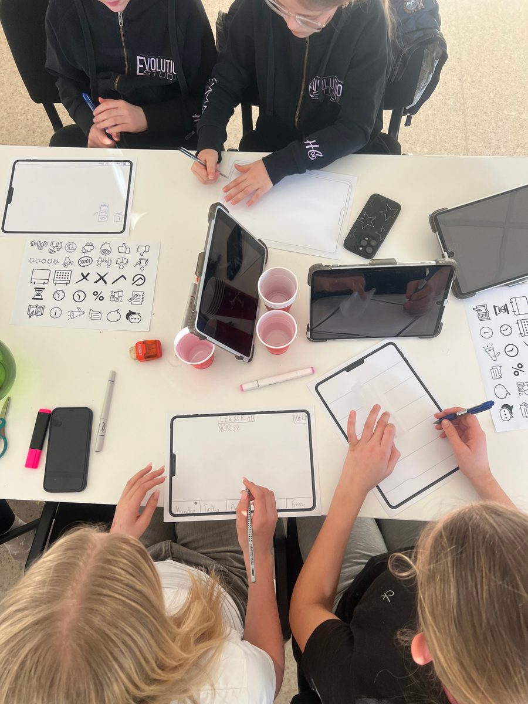
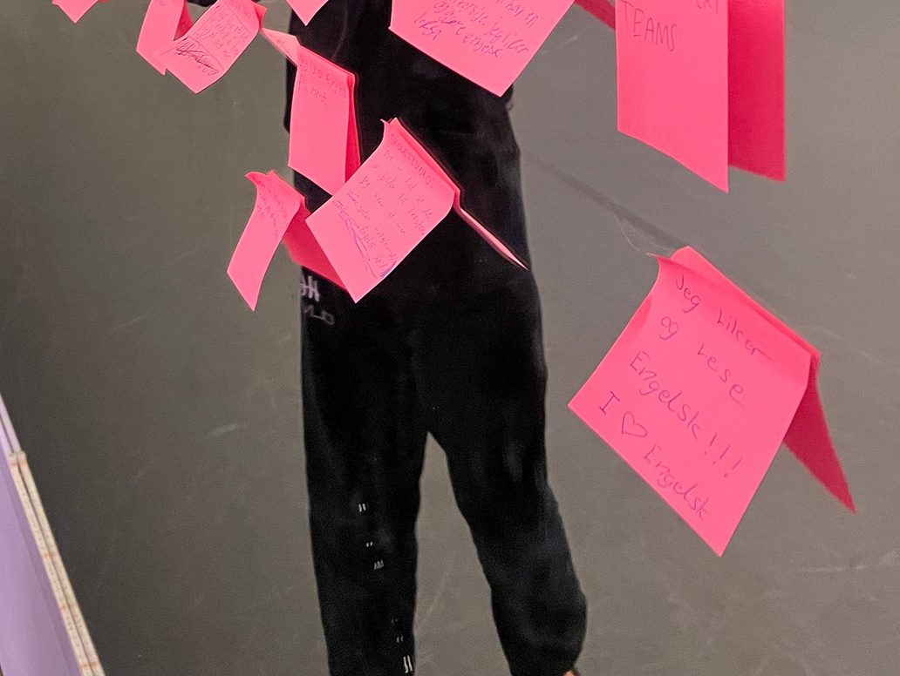
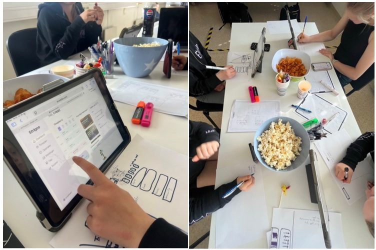
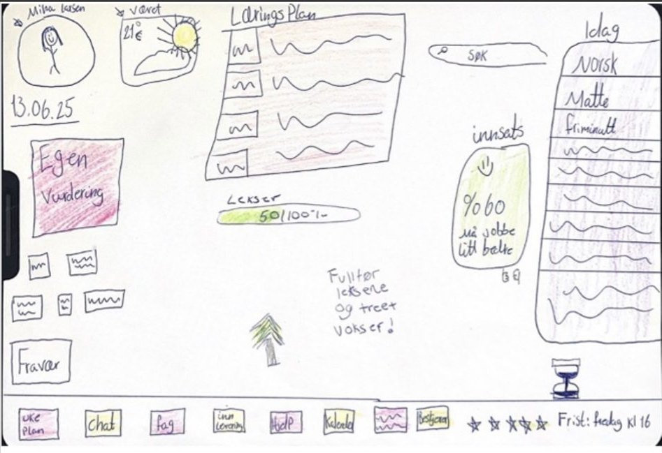
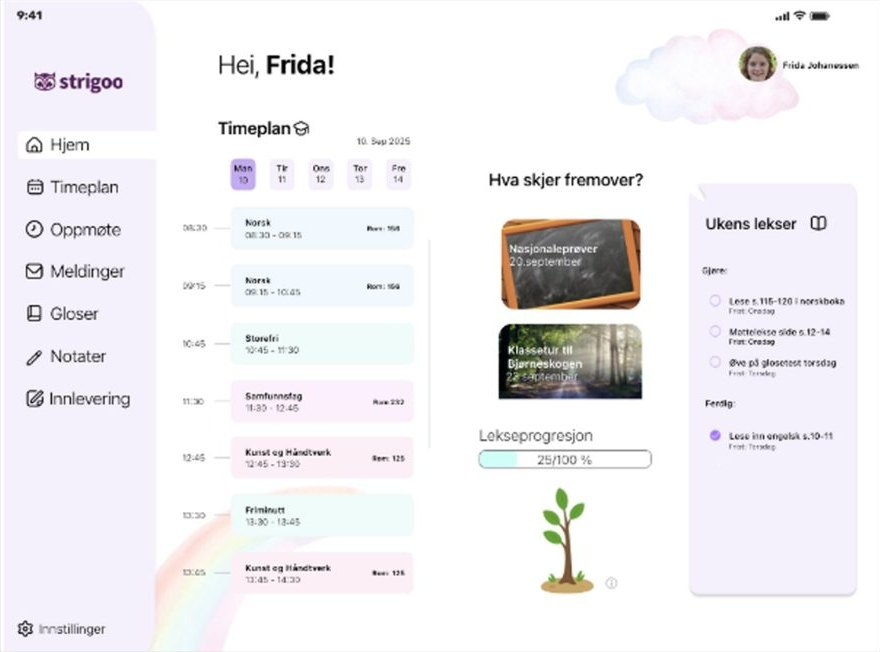

En digital leksemodul – designet sammen med barn, foreldre og lærere
Masteroppgave i Applied Computer Science, spesialisering i interaksjonsdesign, ved Høgskolen i Østfold (2025). Skoleplattformen Strigoo var case.
- 3workshops
- 3brukergrupper
- Akarakter

Problemet
Eksisterende lekseverktøy oppleves som tungvinte, kjedelige og lite samarbeidsvennlige. Hvordan designer man en leksemodul som møter behovene til både barn, foreldre og lærere?
Samarbeid: Utført med Strigoo som case og i tett dialog med veileder. Barn, foreldre og lærere var med som likeverdige designpartnere gjennom alle tre workshopene.
Brukerinnsikt
Tre participatory design-workshops med historiefortelling, skissering, rollespill og prototyping (Tell-Make-Enact), fulgt av tematisk analyse og brukertesting på iPad, PC og mobil.


- Enkel navigasjon og struktur. Barna ville finne leksene raskt, uten å lete.
- Engasjerende og motiverende. Lekser skal oppleves som noe man kommer videre i.
- Tydeligere kommunikasjon. Mellom skole og hjem, for både foreldre og lærere.
Designprosessen
Fra en elevs skisse i workshop til high-fidelity-prototype av elevens forside.


Resultat og læring
Low- og high-fidelity-prototyper i Adobe XD for elev, forelder og lærer, og retningslinjer for å involvere barn i designprosesser.
Jeg forventet kreative ideer fra barna og praktiske innspill fra de voksne. Med gode verktøy og tilrettelegging ga barna de mest konkrete innspillene.
Neste gang vil jeg få foreldre og lærere mer fysisk med i workshopene.